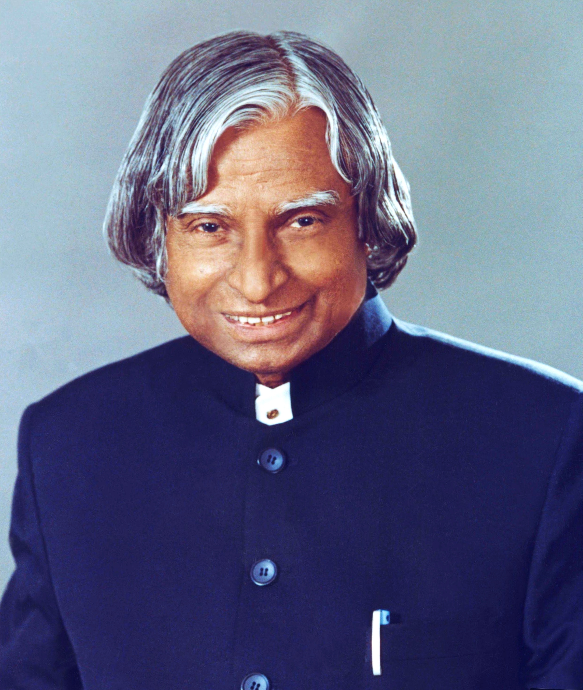

A.P.J.Abdul Kalam
1931-2015
Missile Man Of India
A.P.J. Abdul Kalam :(born October 15, 1931, Rameswaram, India—died July 27, 2015, Shillong) Indian scientist and politician who played a leading role in the development of India’s missile and nuclear weapons programs. He was president of India from 2002 to 2007.> (born October 15, 1931, Rameswaram, India—died July 27, 2015, Shillong) Indian scientist and politician who played a leading role in the development of India’s missile and nuclear weapons programs. He was president of India from 2002 to 2007.
Biographies
- External Quest: Life And Times of Dr kala, by s chanra;pentag publishers,2002.
- Presidesnt A.P.J.Abdul Kalam by R K PRUTHI;Amol publications 2002.